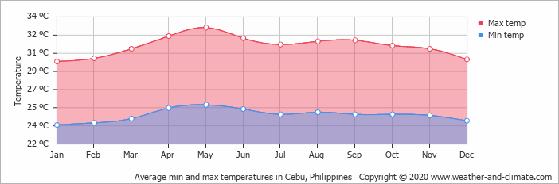

Read more of our Cebu Guide

10 Things To Do in Cebu
10 Things To Do in Cebu
10 Things To Do in Cebu
Exploring the top destinations in Cebu is possible if your schedule permits it, but it requires a well-prepared itinerary to make it possible. We recommend at least 3-6 days to pull this off. Here’s a sample itinerary for Cebu that you can take inspiration from:
If you’re planning to go to Cebu to do water activities, the best time to go would be from January to April. The weather during these months is ideal because there are fewer chances of rain and it’s not too humid as well.
Another good time to go to Cebu is during its Sinulog Festival held every third Sunday of January. Also called the Santo Nino Festival, it's one of the most popular festivals in the country and attracts up to 2 million visitors every year.
If you don't like crowds or you want to score cheap deals, then visit Cebu from July to October. These months are considered the low season. It is when prices are most economical, and there are fewer travelers checking out Cebu's top attractions.
The remaining months of the year generally have better weather, but you'd find yourself amid crowds. The holidays are crowded, too, especially during Holy Week.
The province of Palawan and its top destinations are accessible via land, sea, and air travel. Puerto Princesa is often the gateway to the province of Palawan since more flights are going here than to other airports. Your choice of entry point will affect your budget and itinerary, so it's best to look into which place best fits your preferences.
Traveling by air is the most convenient and hassle-free way to reach Cebu. Mactan-Cebu International Airport is the gateway to Cebu. It is where you will be arriving; it is just an hour or so from Cebu City.
The Mactan-Cebu International Airport is connected to 27 domestic destinations. Wherever you are in the Philippines, you won’t have trouble flying to Mactan. There are flights to the island from major cities in Luzon and Mindanao.
Major jump-offs include; Clark International Airport in Angeles City, Davao International Airport in Davao City, and the Ninoy Aquino International Airport in Manila.
There are a lot of affordable flights from Manila to Cebu. You can take any local carrier like Philippine Airlines, Cebu Pacific, or Air Asia. You can also go to Mactan from smaller airports like Kalibo, Iloilo, or Puerto Princesa.
You can also go to Cebu by ferry or fast craft, although it’s generally not advisable unless you have a lot of time. Cebu has a bustling port complex, and so you can travel to Cebu on fast crafts or ferries from Manila and other local destinations.
Ferry operators such as 2Go, Oceanjet, and Weesam Express have regular trips to Cebu from Manila, Dumaguete, Bohol, Iloilo, Leyte, Cagayan de Oro, and Butuan.